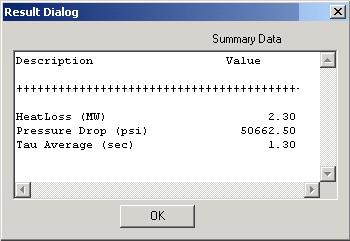

Dump Combustor Module
The Dump Combustor Module is typically placed downstream of solid oxide fuel cells in order to burn out any remaining unreacted fuel. Though the SOFC exhaust stream is dilute and the energy density is low, use of a dump combustor harnesses a significant amount of energy from the lean gas exhaust of fuel cells, and improves overall plant efficiency.
Combustion stability and reaction rate are typically of concern in combustion. Kinetic simulations have shown that combustion occurs over a wide range of temperatures and pressures, with no observed blowout condition for combustion of typical SOFC exhaust. Increasing pressure affects the reaction by decreasing the required residence time and increasing combustion rates. High temperatures also increase the required residence time. Though combustion is possible over a wide range of temperatures, the residence time is so high at low temperatures that a prohibitively large combustion chamber would be required. For these conditions, an alternate combustion process would be required. Options for combustion include preheating the inlet gas, or using a catalytic combustion in place of a dump combustor.
The Vision 21 dump combustor model is based on a plug flow reactor. These types of reactors describe the time evolution of a well-mixed reacting fluid, such as the flow in a pipe with perfect radial mixing and zero axial mixing. The model makes use of the GRImech 3.0 kinetic mechanism (Smith et al), and is designed to provide the combustor volume required for a given fuel conversion, or the fuel conversion for a given volume. The model can be run in one of two modes: (1) Evaluation mode, in which the combustion volume is specified, and the fuel conversion and exit properties are computed, and (2) Design mode, in which the program computes the required volume for a user-specified degree of fuel conversion. A heat loss and pressure drop over the unit can be specified. Outputs include heat loss and pressure drop, if any, combustor volume (for design mode), fuel conversion (for evaluation mode), and residence time. Full error handling is provided to alert the user of error or warning conditions, and to enforce proper input specifications. For example, an error occurs if the equilibrium fuel conversion is below the specified fuel conversion.
 Connections
Connections
Graphical User Interface (UI)
|
|
This User Interface requires the user to first specify the method of module calculation. Evaluation Mode (shown) allows the user to input the existing Volume of a combustor and the module will thereby calculate the maximum possible conversion. When Design Mode is specified, the user inputs a Desired Conversion, and the module calculates the necessary combustor geometry to achieve that specified conversion. Additional required user inputs include the Fraction Heatloss and Pressure Drop through the unit. |

Summary Data (SUM)
|
 |
The Summary shows the computed values for the Heatloss and Pressure Drop, as well as the Tau Average from the computations. When Evaluation Mode is specified in the UI, the Conversion Rate will also be displayed. When Design Mode is specified in the UI, then the Calculated Volume (as shown) will be displayed. |
References
- Gremmen,
R.S., "Oxidation of Low Calorific Value Gases--Applying Optimization
Techniques to Combustor Design,"
- Smith, Gregory P., David M. Golden, Michael Frenklach, Nigel W. Moriarty, Boris Eiteneer, Mikhail Goldenberg, C. Thomas Bowman, Ronald K. Hanson, Soonho Song, William C. Gardiner, Jr., Vitali V. Lissianski, and Zhiwei Qin http://www.me.berkeley.edu/gri_mech/